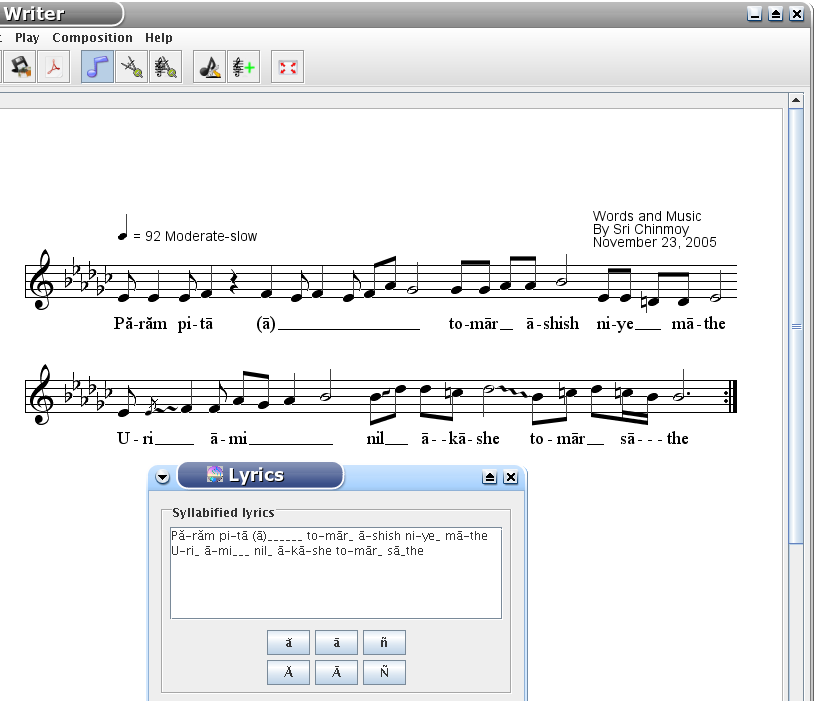

Select the Composition|Lyrics menu, and the lyrics window will appear.
Usually you only enter lyrics in syllabified form. You will see buttons for typing Bengali letters. If you keep the mouse on a button for a little while, the keyboard shortcut will appear. This picture shows you the rules.

You use a hyphen to divide two syllables, and underlines for a pull, both at the and of a word and in the word. You must break the line when you enter the lyrics of the next line of the song. You use -- (double hyphen) to type a long hyphen. This long hyphen is needed between English words like Compassion-Eye.
If you want to have the lyrics under the song, just press Take from the syllabified lyrics button. This will copy the lyrics without hyphens and underlines. Sometimes you have to correct it manually. If you have a translation, you can enter it and it will appear under the lyrics. Press OK. Now you can go back to the Composition Settings and take the first four words for the title. This can be done with one button-click, you do not have to type anything again!